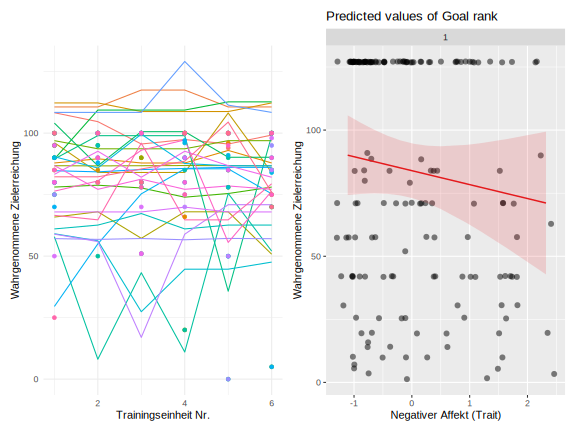

Characteristic | Overall | Divers | Männlich | Weiblich | p-value |
|---|---|---|---|---|---|
Age | 32 (24, 43) | 20 (20, 20) | 36 (24, 59) | 32 (25, 40) | 0.2 |
Sport | >0.9 | ||||
Body & Mind Fitness | 1 (3.8%) | 0 (0%) | 0 (0%) | 1 (5.6%) | |
CrossFit/Funktionale Fitness | 1 (3.8%) | 0 (0%) | 0 (0%) | 1 (5.6%) | |
Kanurennsport | 1 (3.8%) | 0 (0%) | 0 (0%) | 1 (5.6%) | |
Kraftsport | 4 (15%) | 0 (0%) | 2 (29%) | 2 (11%) | |
Laufen | 10 (38%) | 1 (100%) | 3 (43%) | 6 (33%) | |
Parkour | 1 (3.8%) | 0 (0%) | 0 (0%) | 1 (5.6%) | |
Partnerakrobatik | 1 (3.8%) | 0 (0%) | 1 (14%) | 0 (0%) | |
Stand Up Paddeling | 1 (3.8%) | 0 (0%) | 0 (0%) | 1 (5.6%) | |
Trampolinturnen | 1 (3.8%) | 0 (0%) | 0 (0%) | 1 (5.6%) | |
Triathlon | 5 (19%) | 0 (0%) | 1 (14%) | 4 (22%) |
Was uns am Laufen hält: Vorhersagen von Bewegungsadhärenz durch Affekt und Attributionsstile
Enno Winkler
Zusammenfassung
This document is a template.
Schlüsselwörter: keyword1, keyword2, keyword3
Word Count: 7140
Was uns am Laufen hält: Vorhersagen von Bewegungsadhärenz durch Affekt und Attributionsstile
Inhaltsverzeichnis
Tabellenverzeichnis
Abbildungsverzeichnis
Symbol- und Abkürzungsverzeichnis
| Abkürzung | Bedeutung |
|---|---|
| PA | Physische Aktivität |
Die Empfehlungen zu regelmäßiger physischer Aktivität (PA, Caspersen et al., 1985) der WHO (World Health Organization, 2010) werden von nur etwa 26% der erwachsenen Bevölkerung in Deutschland in Bezug auf Muskel- und Ausdauertraining erreicht (Robert Koch-Institut, 2022). Das hat großen gesundheitlichen und finanziellen Schaden zur Folge. Ding et al. (2016) gingen der Frage nach, welche Kosten sich jährlich und weltweit durch Produktivitätsausfälle und Behandlungskosten als Folge von Inaktivität ergeben. Als Endergebnis nennen die Autor:innen, dass der Gesamtbetrag einer konservativen Schätzung nach zwischen 19 und 182 Milliarden, einer weniger konservativen Schätzung nach allerdings zwischen 47 und 339 Milliarden Dollar liegt. Dabei sind die gesundheitlichen Vorteile von PA ermutigend. Menschen, die ein relativ hohes Niveau an PA berichten, zeigen eine deutlich reduzierte Mortalität (Warburton, 2006). Auch Studien mit direkten Messmethoden kommen zu diesem Ergebnis. So fanden Myers et al. (2004) in einer Analyse der Trainingskapazität von Männern im fortgeschrittenen Erwachsenenalter eine um etwa 20% reduzierte Mortalität pro Zuwachs des Aktivitätsniveaus um ein metabolisches Äquivalent. Eine Erklärung dafür ist, dass aktivere Individuen seltener an chronischen Krankheiten erkranken. I.-M. Lee et al. (2012) berichten in einer Meta-Analyse, dass die Krankheitslast von Herz-Kreislaufkrankheiten, Krebs und Diabetes bei Inaktivität um 6-10% erhöht ist und dass damit eine um mehr als ein halbes Jahr verkürzte durchschnittliche Lebenserwartung einhergeht. Körperliche Aktivität bringt auch Vorteile für die psychische Gesundheit. Das geschieht sowohl durch die Veränderung physiologischer als auch psychologischer Zustände im Körper (Mikkelsen et al., 2017). In diesem Zusammenhang existiert zur Wirkung von PA in der Behandlung von Depression reichhaltige Forschungsarbeiten, die sich teils skeptisch (Cooney & Mead, 2013), aber überwiegend positiv über die Wirkung von PA äußern (Carter et al., 2016; Ledochowski et al., 2016; Morres et al., 2018; Paluska & Schwenk, 2000). Zusammenfassend gibt es überwältigende Evidenz für gesundheitliche Vorteile durch angemessene physische Aktivität.
Der Fokus von Studien zur Bewegungsförderung lag bisher auf Interventionen, die inaktive Personen dazu ermutigen, sich mehr zu bewegen und auf der Adhärenz zu solchen Interventionen (siehe z.B. Gillison et al., 2009). Weniger Studien befassten sich mit der Frage, welche Faktoren die Aufrechterhaltung einer Bewegungsgewohnheit von Personen, die bereits gewohnheitsmäßig aktiv sind, beeinflussen (z.B. Stetson et al., 2005). Das Rückfallpräventionsmodell (Relapse Prevention Model, Marlatt and George (1984)) könnte einen geeigneten Rahmen zur Untersuchung dieser Fragestellung darstellen.
Theoretischer Hintergrund
Physische Aktivität und Bewegungsadhärenz
Physische Aktivität (physical activity [PA]), auch körperliche Aktivität (z.B. Krug et al., 2013) wird in vielen Definitionen als mechanistisch verstanden. So definiert Caspersen et al. (1985) physische Aktivität als jedwede Aktivität der Skelettmuskeln, die einen Energieumsatz zur Folge hat. Andere Autor:innen unterscheiden sich in der Definition von physischer Aktivät in den Bedeutungsnuancen. So spezifizieren beispielsweise Hollmann and Strüder (2009), dass die Aktivität in einer Steigerung des Energieumsatzes resultieren muss, um als PA zu gelten. Zweifelsohne sind klare und einfache Definitionen essenziell für den wissenschaftlichen Zugang zu diesem Phänomen. Piggin (2020) argumentiert jedoch, dass diese reduktionistische Auffassung von PA wird dem komplexen Erleben und Verhalten im Zusammenhang mit physicher Aktivität nicht gerecht wird und steht einer ganzheitlichen Betrachtung im Wege steht. Das ist auch im Einklang mit dem biopsychosozialen Ansatz (Engel, 1977). Im Gegensatz zum krankheits- und defizitorientierten Biomedizinischen Ansatz berücksichtigt der Biopsychosoziale Ansatz auch psychische und soziale Faktoren, zusätzliche zu den biologischen Faktoren. Um den Zusammenhang psychischer Phänomene (Affekt, Attribution) mit PA in dem Kontext der Gesundheitsförderung zu diskutieren, übernehme ich daher die Definition von Piggin (2020): “Physical activity involves people moving, acting and performing within culturally specific spaces and contexts, and influenced by a unique array of interests, emotions, ideas, instructions and relationships.” (S. 5).
Adhärenz im Gesundheitswesen betrifft das Ausmaß, in dem sich Patient_innen an Behandlungspläne oder Empfehlungen halten (z.B. Fernandez-Lazaro et al., 2019).Bewegungsadhärenz (exercise adherence, z.B. (Mcauley et al., 1994)) beinhaltet das Einhalten von selbst-oder fremdgesetzten Zielen im Zusammenhang mit PA (Buckworth & Dishman, 2007) und hat in der Regel das Ziel der Bewegungsförderung in einem gesundheitlichen Kontext (Ainsworth & Der Ananian, 2020).In einem Übersichtsartikel konstatieren Mahmood et al. (2023), dass Adhärenz im Kontext von physischer Aktivität eine Herausforderung für Leistungserbringer_innen des Gesundheitswesen ist. Die Autor_innen nennen Einflüsse der Person, Krankheit oder Verletzung, Einflüsse des Therapieprogramms, sowie des Gesundheitssystem als Faktoren, welche die Bewegungs-Adhärenz beeinflussen. Die in dieser Arbeit untersuchten Zusammenhänge, Affekt und Attributionsstil, sind psychische Konstrukte und damit den Einflüssen der Person zuzuordnen. Goddard et al. (2020) diskutieren diese und weitere psychologische Einflüsse auf die Adhärenz zu Bewegungs-Interventionen im Kontext der Rehabilitation nach Verletzungen. Selbstwirksamkeit, Zielorientierung, Motivtion, Intention, Einstellungen und soziale Unterstützung wurden in mehreren der hier analysierten Studien untersucht. McAuley et al. (1990) fanden in einem nicht-klinischen Programm, dass Erwachsene, die das Programm abbrachen, diesen Abbruch oft internal und instabil attribuierten. Außerdem geht ging der Abbruch mit negativem Affekt einher. Brewer et al. (2000) untersuchten in einem prospektiven Design Attribution im Kontext der Bewegungsadhärenz und fanden, dass hier eine interne, stabile Attribution mit einer schnelleren wahrgenommene Heilung einhergehen. Hier wurde Attribution mit der Revised Causal Dimension Scale (CSD II, McAuley et al., 1992) erfasst. Courneya et al. (2004) berichten aus einer Studie mit rehabilitierten Krebs-Patient_innen, dass negativer Affekt mit einer geringeren Trainingshäufigkeit und -Dauer bei einer home-based Fitness-Intervention einhergeht, und eine internale Attribution mit einer erhöhten Häufigkeit und Dauer. Attribution wurde auch hier mit der CSD II und Affekt basierend auf der Konzeption von Weiner (1986) erfasst. Die Forschung zu Faktoren, die Rückfälle zu sedentärem Verhalten vorhersagen, ist insgesamt relativ dünn noch nicht abgeschlossen (Roordink et al., 2021).
Messung von Physischer Aktivität
Es gibt drei grobe Kategorien, in die Messmethoden für physische Aktivität fallen, und zwar direkte, indirekte und Fragebogen.
Die Messung per Fragebogen unterliegt typischen Problemen des Selbstberichts. Da beim Beantworten an Vergangenes erinnert wird, und bei der Konstruktion der Erinnerung abweichen auftreten können, ergibt sich das Problem der Retrospektivität. Außerdem kann sich das Antwortverhalten von Versuchspersonen verändern, wenn sie sich Bewusst sind, dass ihre Antworten analysiert werden, also Reaktivität herrscht. Zum Beispiel könnten Personen so antworten, wie es sozial erwünscht ist. Wenn eine Versuchsperson sich bewusst oder unbewusst als besonders sportliche Person darstellen möchte, könnte sie eine erhöhte Trainingsintensität berichten. Zur Messung physischer Aktivität gibt es Fragebögen, die das durchschnittliche Niveau physischer Aktivität im Alltag zu erfassen suchen, und Fragebögen, die sich spezifisch auf einzelne Trainingseinheiten beziehen.
Direkte Messmethoden beziehen sich auf die Beobachtung von physischer Aktivität oder Messmethoden von physischen Parametern, die direkt mit physischer Aktivität zusammenhängen. Dazu zählen Herzschlag oder der Laktat-Level im Blut, oder die strukturierte Beobachtung (SOCARP), wozu auch das Stoppen der Zeit bei dem Rundenlauf (e.g. Cooper-Test) beinahltet.
Affekt
Affekt wird auf zwei Dimensionen konzipiert, und zwar Valenz und Aktivierung. Positiver affekt fühlt sich gut an und zieht uns dazu
Aktivierender Affekt geht mit erhöhtem Puls, Aufgeregtheit, gehobener Stimmung etc. einher. Niedrige Ausprägungen auf dieser Dimension des Affekts gehen mit Entspannung oder Rückzug einher. (Russell, 1980) konzipierte basierend von der Einteilung von emotionsbeschreibenden Wörtern auf einem zirkulären Arrangement das sogenannte Circumplex Model of Affect. Versuchspersonen sollten diese Wörter zuerst kategorisieren und dann auf einem Kreis anordnen, mit gegensätzlichen Wörtern gegenüber voneinander, und ähnlichen Wörtern nahe beieinander. Hier zeigte sich, dass dieser Kreis anhand von zwei bipolaren Basisdimensionen aufgespannt werden kann: pleasure vs. displeasure, also der Affekt, und das Ausmaß von arousal, also Erregung. Watson and Tellegen (1985) legten darauf aufbauend ein modifiziertes, ebenfalls zirkuläres Modell vor, dem die zwei Dimensionen “positiver Affekt” und “negativer Affekt” zugrunde liegen. Positiver Affekt bezieht sich hier auf gute Gefühle und Lebensfreude, während negativer Affekt eine unangenehme Erregung meint. Diese Dimensionen werden hier als unipolar und unabhängig voneinander betrachtet: So ist beispielsweise niedriger positiver Affekt eher die Abwesenheit von positivem Affekt und nicht unbedingt eine hohe Ausprägung negativen Affekts. Reich et al. (2003) fassen Evidenz für beide dieser zunächst als gegensätzlich erscheinenden Konzeptionen von Affekt zusammen und beschreiben das Dynamic Model of Affect Relationships, in dem der Kontext einbezogen wird. Dieses Modell postuliert, dass unter Stress eine Verarbeitung von Affekt stattfindet, wie sie von Russell (1980) konzipiert wurde, also auf voneinander abhängigen, bipolaren Dimensionen. Bei niedrigem Stress hingegen findet eine komplexere Verarbeitung statt, wobei eine bivariate, unipolare Konzeption mit den Variablen positiver Affekt und negativer Affekt wie von Watson and Tellegen (1985) erklärungsmächtiger ist. Auch die Positive and Negative Affekt Scale (PANAS, Watson et al., 1988), die in dieser Arbeit Verwendung fand, orientiert sich an dieser Konzeption. Affekt kann als Zustand oder Eigenschaft erfasst werden (Eid & Diener, 1999; Steyer et al., 1999). Wenn ein Fragebogen dazu instruiert, das aktuelle Gefühlserleben wiederzugeben, dann handelt es sich um einen Zustand. Die Aggregation von Zuständen über die Zeit hinweg gibt Hinweise auf die Eigenschaftsausprägung einer Person. Mit der Instruktion “im Allgemeinen” erfasst man die Eigenschaft, wie eine Person tendenziell Affekt erlebt.
Attribution (Ursachenzuschreibungen) und Attributionsstil
Dieses Konstrukt wurde zuerst von Heider (1958) beschrieben und wurde dann in verschiedenen Ansätzen weiterentwickelt. Heider sah den Menschen als systematisch nach Erkenntnis seiner sozialen Umwelt strebendes Individuum an. Ein Fokus seiner Theorie liegt auf der subjektiven Erklärung von Menschen, die Ereignisse in ihrer sozialen Umwelt eher externalen, in der Umwelt liegenden, oder internalen, in der Person liegenden Ursachen zuschreiben. Weiner (1986) widmete sich den Erklärungen, die Menschen zu Erfolgen und Misserfolgen heranziehen. In dieser Konzeption werden die Dimensionen Lokus, Stabilität und Kontrollierbarkeit einbezogen. Kelley (1967) brachte eine Theorie hervor, die die Mechanismen von Attribution bei mehrfacher Verhaltensbeobachtung weiter spezifiziert. Nach dieser Theorie sind die Prozesse, die in einer Ursachenzuschreibung (Attribution) münden, unterschiedlich, wenn Informationen aus einer wiederholten Beobachtung des Verhaltens bei sich oder anderen herangezogen werden können. Diese Informationen können anhand ihres Ursprungs vom Stimulus, also des Verhaltens, der Person oder Situativer Rahmenbedingungen kategorisiert werden. Die Attribution erfolgt anhand der Kriterien der Distinktheit (wie stark variiert das Verhalten bei unterschiedlichen Auslösern?), des Konsensus (Inwiefern stimmen Reaktionen unterschiedlicher Personen zu dem Verhalten überein?) und der Konsistenz (Wie stark variiert das Verhalten bei unterschiedlichen Rahmenbedingungen?). Ein Individuum fällt zuletzt die Attribution anhand des Kriteriums, das am ehesten mit dem Verhalten kovariiert. Seligman et al. (1979) untersuchte den Zusammenhang zwischen Depression und Ursachenzuschreibungen und zog die Dimensionen Internalität-Externalität, Stabilität und Globalität heran. Das Nichteinhalten eines Trainingsprogramms könnte beispielsweise auf externe Faktoren oder interne, in der Person befindliche Faktoren attribuiert werden (Lokus). Ebenso könnte die variable Erklärung des einmaligen Ausrutschers oder die stabile Erklärung der Fehlenden Sportlichkeit herangezogen werden (Stabilität). Zuletzt könnten Personen sich den Misserfolg durch Faktoren erklären, die sich nur auf diese Situation beziehen, z.B. “Ich kann mich zwar nicht an meine Bewegungsziele halten, aber meine Studienziele schaffe ich”, oder auf andere Situationen generalisieren z.B. “Ich bin generell ein wenig zielstrebiger Mensch”. Solche Arten der Attribution sind der Dimension Globalität zuzuordnen. Der Attributionsstil ist eine Persönlichkeitseigenschaft, die Attributionen besonders in uneindeutigen Situationen beeinflusst Seligman et al. (1979). Beispielsweise tendieren manche Personen eher dazu, Erfolge auf interne Faktoren zu attribuieren, sie haben einen internalen Attributionsstil.
Das Rückfallmodell
Das Rückfallmodell von Marlatt and George (1984) beleuchtet die Mechanismen der Aufrechterhaltung von Gesundheitsverhalten. Es basiert auf der Theorie des Sozialen Lernens (Bandura, 1977) und beinhaltet sowohl kognitive als auch behaviorale Komponenten. Marlatt and George (1984) erklären, dass in diesem Modell die Initiierung von Gesundheitsverhalten und die Aufrechterhaltung dessen als zwei komplett verschiedene Prozesse verstanden werden. Somit ist also in diesem theoretischen Rahmen irrelevant, wie ein Individuum ein Gesundheitsverhalten, wie z.B. das Nichtrauchen oder regelmäßige PA, aufgenommen hat. Es wird allein die Frage betrachtet, wie Individuen auf Ausfälle bzw. Rückfälle vorbereitet werden können. Rückfälle werden hier nicht als Versagen behandelt, sondern als Teil des Prozesses zu einem stabilen Gesundheitsverhalten. Das Modell ist ist auch auf den Kontext von Sport und Bewegung anwendbar (z.B. Marcus et al., 1997). Es wurde in Bezug auf Populationen mit bewegungsarmer Lebensweise (Marcus & Stanton, 1993; Martin et al., 1984); und bereits aktive Populationen (Stetson et al., 2005) angewendet.
Zentrale Konstrukte in diesem Modell sind nach Marlatt and George (1984) Hochrisikosituationen (high risk situations), wahrgenommene Kontrolle (perceived control), Coping-Reaktion (coping response), Positive Erwartungen (positive outcome expectancies), und der Verstoß gegen Abstinenz (abstinence violation effect). In der neuen Konzeptualisierung des Modells von Witkiewitz and Marlatt (2009) gehen die Autor_innen auf Kritik am Modell ein und stellen ein angepasstes Modell vor, dass keine bestimmte zeitliche Abfolge dieser Komponenten mehr annimmt.
Hochrisikosituationen sind Situationen, in denen die Wahrscheinlichkeit eines Rückfalls erhöht ist. Die drei im Sample von Marlatt and George (1984) am häufigsten berichteten Situationen sind negative emotionale Zustände (55%), sozialer Druck (20%),und zwischenmenschliche Konflikte (16%). Im Kontext von PA könnte ein solcher Zustand von negativen Gefühlen nach dem Sport herrühren.
Individuen erleben wahrgenommene Kontrolle, wenn sie erfolgreich Abstinenz ausüben oder, im Kontext von PA also von sedentärem Verhalten absehen. Wahrgenommene Kontrolle steigt, je länger die Abstinenz andauert und sinkt in einer Hochrisikosituation.
Coping-Reaktionen verbessern die wahrgenommene Kontrolle in einer Hochrisikosituation allerdings erheblich. Hierbei handelt es sich um ein Repertoire von Verhaltensweisen, um mit Hochrisikosituationen umzugehen. Als Beispiel in Bezug auf Sport und Bewegung sei die Angewohnheit genannt, trotz schlechten Wetters mit entsprechender Kleidung laufen zu gehen.
Positive Erwartungen stammen von der erwarteten sofortigen Belohnung durch das Unterlassen von Gesundheitsverhalten, wie z.B. wenn das Unterlassen einer Lauf-Einheit kurzfristig belohnend erscheint.
Verstöße gegen die Abstinenz werden von persönlicher Attribution begleitet. Das Rückfallmodell postuliert, dass eine internal-variable Attribution dienlich ist. Nach einem Rückfall zu sedentärem Verhalten wäre es demnach dienlich, die Ursache bei sich selbst zu sehen und als veränderbar zu betrachten.
Das ursprüngliche Rückfallmodell ist im Bereich des Substanzgebrauchs weitreichend geprüft und als wirksam befunden worden (Irvin et al., 1999). Die revidierte Fassung von Witkiewitz and Marlatt (2009) ist noch nicht umfassend geprüft. Innerhalb dieses Modells ist die wichtige Rolle der Selbstwirksamkeit bereits gut untersucht, in Bezug auf andere Variablen ist die Studienlage allerdings noch dünn (Amireault et al., 2013; Roordink et al., 2021).
Reproduzierbarkeit
Zusätzlich zur Replizierbarkeit von Studien ist die Reproduzierbarkeit von Ergebnissen ein Qualitätskriterium moderner Forschung. Deshalb habe ich diese Arbeit als reproduzierbares Manuskript erstellt. Bei der herkömmlichen Erstellung eines Manuskripts werden die Ergebnisse aus der Statistik-Software in das Manuskript kopiert werden. In einem reproduzierbaren Manuskript wird hingegen der Programmiercode direkt in das Dokument geschrieben, und die Ergebnisse werden bei Ausgabe (“Rendern”) aus den Rohdaten berechnet und erscheinen dann im Dokument. Mehrere Artikel betonen die Wichtigkeit einer solch genauen Nachvollziehbarkeit der Ergebnisse. Silberzahn et al. (2018) sprechen sich dafür aus, Datenanalysen vermehrt als eine Art Crowdsourcing zu betreiben. Die Forscher:innen haben in ihrer Studie ein Datensatz von 13 verschiedenen Forscherteams analysieren lassen und fanden, dass nur ..% zum selben Ergebnis kommen. Durch das bereitstellen von reproduzierbaren Manuskripten in Repositorien wie z.B. GitHub wird ermöglicht, dass dritte die Skripte nicht nur einsehen, sondern auch bearbeiten und sich an der Diskussion beteiligen können. Kummerfeld and Jones (2023) betont, dass aufgrund der einfach Verfügbarkeit unzähliger Analysemethoden weitere Schritte in der Wissenschaftspraxis nötig sind, um das “viele Analyst:innen”-Problem zu adressieren. (Perkel, 2022) Diskutiert das herkömmliche Copy-Paste-Reporting als potentiell fehleranfällig. [Lit] betonen, dass Reproduzierbarkeit in mehreren Stufen vorliegt. Den Code zur Berechnung der Ergebnisse bereitzustellen, ist demnach der erste Schritt. (Munafò et al., 2017) betonen die Wichtigkeit von Open Science Praktiken, einschließlich offener Analyseskripte.
Mehrebenenanalysen
In der Präregistrierung wurde als Haupttest eine Mehrebenenanalyse, auch bekannt als Hierarchisches Lineares Modell spezifiziert. In meinen Ausführungen zu diesen Modellen berufe ich mich unter anderem auf die Lehrwerke von J. J. Hox et al. (2017a) und Field et al. (2012), sowie die Dokumentationen der R-Pakete {nlme} (Pinheiro et al., 2023) und {lme4} (Bates et al., 2015).
Ein oft genanntes Beispiel für hierarchische Modelle ist die Situation in Studien, bei denen Daten aus verschiedenen Klassen erhoben werden (siehe z.B. J. J. Hox et al., 2017b): Aus praktischen Gründen können Schüler:innen nur selten völlig randomsiert einer Intervention zugeordnet werden. Stattdessen durchlaufen einige Klassen die Intervention, andere wiederum nicht. Die Zugehörigkeit zu einer bestimmten Klasse hat einen Einfluss auf die Daten: So könnte eine Intervention, die das Mathematik-Interesse erhöhen soll, in einer Klasse besonders erfolgreich sein, in der der Mathematikunterricht bisweil als weniger interessant wahrgenommen wurde (siehe z.B. Tsai et al., 2008). Innerhalb einer Klasse sind die Daten eizelner Schüler:innen also nicht unabhängig voneinander, die Datenstruktur weist trennbare “Cluster” auf. Um diese Tatsache zu berücksichtigen, muss es in der Regel ermöglicht sein, dass das Interzept, also der “Startpunkt” der Regressionsgeraden, an dem alle Prädiktoren gleich null sind, variieren kann. Dazu könnten auch die Steigungen der Regressionsgeraden je nach Klasse variieren. Diese je nach Klasse variierenden Effekte werden als Zufallseffekte (random effects) bezeichnet. Auch bei längsschnittlichen Daten hat man solche “genesteten” Daten. Wenn ein Individuum zu mehreren Messezeitpunkten den gleichen Fragebogen ausfüllt, dann ist schließlich anzunehmen, dass die Daten eines Individuums untereinander zusammenhängen. Hier sind Daten dann in Individuen statt in Klassen genestet. Ein Individuum ist also ein Cluster.
Die Zentrierung der Prädiktoren ist ein wichtiger Schritt in der Spezifikation einer Mehrebenenanalyse (Nezlek et al., 2006). Hier gibt es zwei Möglichkeiten: Die Zentrierung am Gesamtmittelwert (grand mean centering) und die Zentrierung am Gruppenmittelwert (cluster mean centering). Am Gesamtmittelwert zentrieren heißt, dass die einzelnen Werte in die Differenz vom Gesamtmittelwert umgerechnet werden. Hier ändert sich die Interpretation des Interzepts: Das Interzept ist dann die Ausprägung der Zielvariablen, wenn die jeweiligen Prädiktoren dem Gesamtmittelwert entsprechen. Beim cluster mean centering ist der Unterschied lediglich, dass die Differenz zum Mittelwert innerhalb eines Clusters berechnet wird.
Bei längsschnittlichen Daten ergeben sich zwei Besonderheiten: Erstens ist anzunehmen, dass die einzelnen Messzeitpunkte untereinander korrelieren (Daten von Messzeitpunkt 1 hängen stärker mit Messzeitpunkt 2 zusammen als mit Messzeitpunkt 10). Zweitens ist die Trennung von intraindividuellen (within-person) Effekten und interindividuellen (between-person) wichtig. Ein Beispiel von (Curran & Bauer, 2011): Über Personen hinweg hängt mehr physische Aktivität mit einem geringeren Risiko für Herzinfarkte zusammen (between-person-effect). Allerdings kommen Herzinfarkte häufig beim Trainieren vor (within-person-effect).
Um der Korrelation zwischen Messzeitpunkten Rechnung zu tragen, wird eine Korrelationsmatrix spezifiziert. Diese fügt dem Modell die angenommene Korrelationsstruktur hinzu und somit kann für die Korrelation zwischen Messzeitpunkten kontrolliert werden.
Für die Trennung von within- und between-person-Effekten wird empfohlen, wiederholt gemessene Prädiktoren anhand des Gruppenmittelwertes zu zentrieren und stabile Prädiktoren anhand des Gesamtmittelwertes (Wang & Maxwell, 2015).
Das Interzept ist der “Startpunkt” der Vorhersagegeraden eines jeden Individuums, hier repräsentiert dieser Wert das Ausmaß an wahrgenommener Zielerreichung, wenn alle Prädiktoren dem Mittelwert entsprechen. Da nicht anzunehmen ist, dass alle Versuchspersonen mit genau dem gleichen Ausmaß an wahrgenommener Zielerreichung in die Studie starten, geht das Interzept als random effect in das Modell ein. Es wird also zugelassen, dass die Interzepte jeder Versuchsperson frei variieren.
Von den Prädiktoren wird wiederum erwartet, dass sie alle Versuchspersonen in gleicher Weise beeinflussen In diesem Modell sind das der negative Affekt nach der Trainingseinheit sowie als Trait, beziehungsweise der Lokus und die Stabilität des Attributionsstils. Diese Prädiktoren gelten also als fixed effects des Modells.
Der Intraklassenkoeffizient (ICC) gibt wieder, wie viel Varianz auf die Unterschiede zwischen Gruppen bzw. Clustern zurückgeführt werden kann. Dies rechtfertigt die Anwendung von Hierarchischen linearen Modellen, die ebendiese Cluster-Unterschiede berücksichtigt. Besonders in der psychologischen Forschung und Sozialwissenschaft werden aber HLMs auch empfohlen, wenn der ICC niedrig ist, obwohl eine Unterscheidung verschiedener Cluster zu erwarten ist (Nezlek, 2008).
Hypothesen und Forschungsfrage
Die Forschungsfrage ist, inwiefern Affekt oder der Attributionsstil den Trainingsausfall bzw. die wahrgenommene Zielerreichung vorhersagen. Hierbei bezieht sich Affekt auf den State
Wenn negatives Gefühlserleben und eine undienliche Attribution nach einem Rückfall häufiger zum schlussenlichen Unterlassen des Gesundheitsverhaltens fühlen, dann sollten ein tendenziell negatives Affekterleben und ein external - stabiler Attributionsstil weniger Trainingseinheiten und eine schwächer ausgeprägte Erreichung des gesetzen Ziels erreichen.
H1: Ein internal - variabler Attributionsstil sagt weniger Trainingsausfälle (H1.1), sowie eine geringere wahrgenommene Zielerreichung vorher (H1.2). H2: Ein negativeres Affekterleben sagt mehr Trainingsausfälle (H2.1) und eine geringere wahrgenommene Zielerreichung vorher (H2.2).
Methode
Instrumente
Demografische Variablen: In der Baseline-Erhebung wurden das Alter, das Geschlecht, die Sportart und das Sportziel (z.B. “Marathon”) abgefragt.
Attributionsstil: Zur Erfassung des Attributionsstils wurde das Attribution Style Questionnaire (Peterson et al., 1982) eingesetzt. Den Versuchspersonen wurden 16 verschiedene Szenarien präsentiert, die einen Erfolg oder Misserfolg schilderten, z.B. “You have been looking for a job unsuccessfully for some time.” Es wurde dann die Ursache für den Erfolg oder Misserfolg in einer offenen Frage abgefragt, damit die Teilnehmenden sich beim Antworten auf die darauffolgenden Fragen nur auf diese eine Ursache beziehen. Danach wurden auf einem semantischen Differenzial mit Werten von 1-7 die drei Dimensionen Lokus, Stabilität und Globalität erfasst. Zum Lokus lautete die Frage z.B. “Is the cause of your unsuccessful job search due to something about you or to something about other people or circumstances?”, und die Pole des Items waren jeweils “Totally due to other people or circumstances - 1” und “Totally due to me -7”. Hier repräsentieren niedrigere Werte einen internen, höhere Werte einen internen Lokus. Die Stabilität wurde so erfasst, dass niedrige Werte eine niedrige Stabilität repräsentieren und andersherum, genauso wie bei der Globalität. Der Mittelwert aller 16 Situationen wurde für jede der drei Dimensionen gebildet. Die Reliablität und Validität des Fragebogen wird u.a. von Corr and Gray (1996) gestützt. In dieser Studie wurde die von Stiensmeier et al. (1985) validierte Version verwendet. Es gibt Belege zur internen Konsistenz, der Retest-Reliabilität und kovergenten Validität mit dem Beck-Depressionsinventar (Beck & Beamesderfer, 1974)
Positive and Negative Affect Scale (PANAS): Die Positive and Negative Affect Scale (Panas, (Watson et al., 1988)) erfasst auf einer Skala von 1 (“not at all”) bis 5 (“extremely”) den positiven und negativen Affekt, mit jeweils 10 Items für positiven und 10 Items für negativen Affekt. Jedes Item ist nur ein einzelnes Wort, z.B. “interested” für positiven Affekt, oder “distressed” für negativen Affekt. Da es keine negativ gepolten Items gibt, werden die einzelnen Werte zu einem Gesamtwert für positiven und negativen Affekt gemittelt. Neben der Originalstudie von Watson et al. (1988) wurde die die englische Skala auch in neueren Studien als reliabel und valide erklärt (Crawford & Henry, 2004). In dieser Studie wurde die deutsche Übersetzung von Breyer and Bluemke (2016) verwendet. In der Originalstudie wies diese eine Reliabilität von α = .86 auf, und es gibt Belege zur Inhalts-, Konstrukt- und konvergenten Validität (Meteier et al., 2022; Schoedel et al., 2023). Im Prä-Test wurde der Affekt mit der Instruktion “Gib bitte an, wie du dich speziell Training in den letzten 14 Tagen gefühlt hast.” erfasst, also als mittelfristiges Aggregat aus Zuständen. In den wiederholten Befragungen wurde der Affekt im letzten Training als Zustand erfasst.
Trainingsbezogene Variablen: Im Baseline-Fragebogen wruden die wöchentliche Trainingszeit in Stunden und die Lauf-Kilometerzahl abgefragt. Zu jeder Trainingseinheit wurden ebenso die Trainingszeit und Kilometerzahl, bezogen auf das einzelne Training, abgefragt. Dazu wurden die Versuchspersonen gefragt, wie sehr die Intention, das Trainingsziel zu erreichen, ausgeprägt war (Commitment, visuelle Analogskala von 1-100), und zu wieviel Prozent sie ihr Trainingsziel erreicht war (Goal Attainment). Es gab sechs mögliche Einheiten, die die Versuchspersonen für die Studie dokumentieren konnten. In dieser Arbeit wurde die Bewegungsadhärenz als Anzahl der abgeschlossenen Einheiten, sowie als Ausmaß der wahrgenommenen Zielerreichung operationalisiert. Die Daten zu Distanz und Trainingsdauer fanden in dieser Arbeit keine Berücksichtgung.
Weitere Instrumente: In diesem Forschungsprojekt wurden außerdem authentischer und überheblicher Stolz (authentic and hubristic pride, Tracy and Robins (2007)), und implizite Motive (Sokolowski et al., 2000; Winter, 1994) erfasst. Diese Daten wurden in der Bachelorarbeit nicht berücksichtigt.
Session RPE: Die Session Rate of Perceived Exhaustion (Sessionn-RPE, Foster et al., 2001) misst die wahrgenommene körperliche Belastung einer Trainingseinheit auf einer Skala von 0-10. Das Item lautet “How was your workout?” und die Skala soll etwa 30 Minuten nach Beenden des Trainings ausgefüllt werden. Auf den Stufen ß-5 ist jeder Wert beschriftet (0 = Rest, 1 = Very, Very Easy; 2 = Easy; 3 = Moderate; 4 = Somewhat hard; 5 = Hard). Auf den Stufen 6-10 sind nur Stufe 7 (Very Hard) und der Maximalwert (10 = Maximum) beschriftet. Diese Methode der Messung der Trainingsintensität wurde vielfach validiert und die Reliabilität der Skala ist gut (Foster et al., 2021). Die Übereinstimmung mit Messungen der Herzfrequenz bei vielen verschiedenen Arten von Sport ist hoch (Day et al., 2004; Foster et al., 2001). Die Session RPE wurde in dieser Arbeit auf explorativer Basis einbezogen.
Stichprobe:
Die Teilnehmenden waren erwachsene Freizeitsportler:innen, die aktuell und ohne gesunheitliche oder andwerweitige Einschränkung trainieren.
Um ein aussagekräftiges Modell zu bekommen, wird eine Korrelation von 0,5 empfohlen [LIT]. Basierend auf einer Poweranalyse mit 1 – β = 0.95, α = 0.05, und r = 0.5 ergab sich eine ideale Teilnehmerzahl von 38. Die Frage der Poweranalyse für Mehrebenenanalysen ist allerdings komplex (J. Hox et al., 2017). Der Versuch, post-hoc Power des bestimmten Modells durch Simulation mit dem Paket simr (Green & MacLeod, 2016) zu bestimmen, scheiterte, was teils auf die kleine Stichprobe, teils auf die Datenstruktur zurückgeführt werden kann. N = 48 Fälle ergaben sich in dem Rohdatensatz. n = 9 wurden von der Analyse und weiteren Befragungen ausgeschlossen, weil sie angaben, nicht an einem systematischen Trainings- oder Bewegungsprogramm teilzunehmen. Aufgrund von mehr als 50 fehlenden Datenpunkten wurden n = 12 Teilnehmende ausgeschlossen. Die deskriptiven Statistiken zu den demografischen Daten sind in Tabelle 1.
Die Teilnehmenden waren durchschnittlich 34.52 Jahre alt (SD = 13.82). Das Alter reichte von 19 bis64.
Durchführung
Diese Studie wurde von der Ethikkommission der Uni Leipzig genehmigt (Fallnr. 2023.05.03 _cb_196).
Die Teilnehmenden wurden über Inserate in sozialen Medien und persönliche Kontakte rekrutiert, es handelt sich also um eine Gelegenheitsstichprobe. Es gab zwei Inklusionskriterien: Die Teilnehmenden mussten erwachsen sein und ein konkretes Trainingsziel verfolgen. Ebenso wurde darauf hingewiesen, dass bei Krankheiten oder relevanten Verletzungen eine Studienteilnahme nicht möglich ist.
Die Freizeitsportler:innen berichteten vor der Studie in einer separaten Sitzung ihr generelles Affekterleben innerhalb der letzten zehn Tage mit der Positive and Negative Affect-Scale (PANAS) von Watson et al. (1988). Der Prä-Test enthielt außerdem die Skala von Peterson et al. (1982) zum Attributionsstil und die Items zu demografischen Daten.
Darauf folgte die Trainingsphase, in der die Trainierenden über einen Zeitraum von maximal zwei Monaten sechs Trainingseinheiten dokumentieren sollten. Dazu wurden sie per E-Mail benachrichtigt und sie wurden gebeten, nach der Trainingseinheit einen Fragebogen auszufüllen. In den Befragungen wurden jeweils der positive und negative Affekt, Session RPE und die trainingsbezogenen Variablen abgefragt.
Die Daten der einzelnen Versuchspersonen wurden mittels eines Pseudonyms zugeordnet, das keinen Rückschluss auf Einzelpersonen ermöglichte. Nach der Datenerhebung wurden der Datensatz komplett anonymisiert. Die Versuchspersonen wurden schriftlich debrieft.
Statistische Analyse
Datenimport, Bereinigung und Transformation
Diese Arbeit wurde mit R (Version 4.5.0 ) und Quarto (Version 1.6.32) erstellt. Die reproduzierbare Version dieses Artikels ist auf GitHub unter https://github.com/Enno-W/BAEW verfügbar.
Die Daten bestanden aus einem Baseline-Test und Angaben aus einem Fragebogen zu sechs darauffolgenden Trainingseinheiten. Diese wöchentlichen Angaben wurden zu Mittelwerten zusammengefasst. Außerdem wurde ausgezählt, wie viele Trainingseinheiten eine Person ausgefüllt hatte.
Versuchspersonen, die angaben, kein konkretes Trainingsziel zu verfolgen oder mehr als 50 fehlende Werte hatten, wurden von der weiteren Analyse ausgeschlossen. Variablen, die im Rahmen des Forschungsprojekts erfasst wurden, aber in dieser Arbeit nicht berücksichtigt werden, wurden eliminiert. Für Werte, bei denen die Versuchspersonen einen Bereich (z.B. 10-15 km) angegeben hatten, wurde der Durchschnitt der beiden Werte gebildet. Da die Skalen von Affekt und Attribution keine gegensätzlich gepolten Items beinhalten, wurde keine Umpolung vorgenommen. Angaben zur Sportart mit dem Wortbestandteil “lauf” wurden zu “Laufen”, und mit “kraft” zu “Kraftsport” zusammengefasst.
Die Normalverteilung bei wurde bei sämtlichen Variablen überprüft.
In dem Datensatz befanden sich immer noch 404 fehlende Werte (16.63%), die per multipler Imputation per predictive mean matching mit 5 Iterationen geschätzt wurden. Bei diesem Verfahren werden in mehreren Durchläufen bzw. Iterationen plausible Werte anhand der Verteilungen und Beziehungen der Variablen untereinander geschätzt (Li et al., 2015).
Für die Berechnung der hierarchischen linearen Modelle wurden die Daten in ein Langformat transformiert, und zwar so, dass jeder Messzeitpunkt in einer Zeile aufgeführt war. So entstanden für jede Versuchsperson sechs Zeilen für die 6 Messzeitpunkte. Die Werte, die nur zu einem Messzeitpunkt erhoben wurden, wie etwa Attributionsstil oder Alter, wiederholten sich in jeder dieser sechs Zeilen.
Statistische Tests
Die Voraussage der Trainingsausfälle durch ein Mehrebeneenmodell scheiterte an einer geringen Variabilität dieser Zielvariable, denn die meisten Versuchspersonen hatten alle Einheiten abgeschlossen. Das hierarchische lineare Modell somit nicht konvergieren konnte. Als Alternative wurden Hypothesen 1.1 und 2.1 explorativ mit einem verallgemeinerten Linearen Modell (GLMM) getestet. Für Hypothesen 1.2 und 2.2 konnte ein hierarchisches lineares Modell berechnet werden. Das Paket nlme von Pinheiro et al. (2024) wird für HLMs mit Längsschnittdaten empfohlen (Ellis & Mayer, 2020), da es den Einsatz einer Korrelationsmatrix ermöglicht, es wurde für diese Arbeit verwendet.
Ergebnisse
Abweichungen von der Präregistrierung
In der Präregistrierung war ein HLM für alle Vorhersagen angedacht. Für die Vorhersage der Anzahl an Trainingsausfällen war die Berechnung eines solchen Modells allerdings rechnerisch nicht möglich. Außerdem wurde nicht wie in der Präregistrierung beschrieben das Pakte lme4 (Bates et al., 2015) verwendet, sondern nlme (Pinheiro et al., 2023), da es für Längsschnittstudien besser geeignet ist (Ellis & Mayer, 2020).
Deskriptive Statistiken
Tabelle 1 zeigt einen Überblick über deskriptive Statistiken aller relevanten Variablen. Nicht normalverteilt waren das Alter (p = 0.007), der negative Affekt (Baseline) (p = 0.006), die durchschnittliche wahrgenommene Zielerreichung nach jeder Trainingseinheit (p = 0.037) und der durchschnittliche negative Affekt nach jeder Trainingseinheit (p = < .001)
Das Alter weist eine leichte Rechtsschiefe auf, es gab also viele jüngere und wenig ältere Teilnehmende.
Die Daten zum Attribution (Locus und Variabilität) folgen einer Normalverteilung, aber alle Werte fielen relativ hoch aus. Sie reichten von 4.3 bis 6.9 für den Lokus und von 4.3 bis 7 für die Variabilität.
Für die Variablen, die nach jeder Trainingseinheit erfasst wurden (Zielerreichung und negativer Affekt), wurden Durchschnittswerte gebildet. Für die durchschnittliche wahrgenommene Zielerreichung häuften sich die Werte in einem hohen Bereich. 14 Personen hatten Werte größer als neunzig, und sämtliche Durchschnittswerte der Ziellerreichung reichten von 62.5 bis 100. Der durchschnittliche negative Affekt war deutlich rechtsschief und leptokurtisch verteilt. Für die Rohwerte nach den Trainingseinheiten zeigt sich einen Maximalwert von 3, wobei die Skala einen Maximalwert von 5 hatte. Die Anzahl der abgeschlossenen Trainingseinheiten, von denen es insgesamt sechs in der Studie gab, weist eine linksschiefe Verteilung auf, da 16 Personen alle Einheiten beendet haben.
Tabelle 1
Deskriptive Statistiken
Variable | Median | Mittelwert | 95% KI | SD | Schiefe | Exzess | p-Wert |
|---|---|---|---|---|---|---|---|
Alter | 31.00 | 34.52 | 5.47 | 13.82 | 0.74 | -0.76 | 0.007 |
Locus | 5.80 | 5.64 | 0.27 | 0.69 | -0.28 | -0.79 | 0.604 |
Variabilität | 5.90 | 5.90 | 0.28 | 0.71 | -0.34 | -0.82 | 0.381 |
n (Trainingseinheiten) | 6.00 | 4.78 | 0.69 | 1.74 | -0.90 | -0.95 | < .001 |
M (Ziellerreichung) | 90.00 | 86.97 | 4.08 | 10.32 | -0.78 | -0.27 | 0.037 |
M (Negativer Affekt) | 1.23 | 1.31 | 0.14 | 0.36 | 2.09 | 4.91 | < .001 |
Baseline negativer Affekt | 1.27 | 1.35 | 0.16 | 0.40 | 0.70 | -0.82 | 0.006 |
Hinweis. Das Konfidenzintervall ist als Abstand vom Mittelwert zum unteren bzw. oberen Konfidenzintervall notiert.
Abbildung 1 zeigt eine Übersicht der Variablen, die zur Überprüfung der Hypothesen herangezogen wurden, in Violinen-Plots.
Abbildung 1
Violinen-Diagramme aller Variablen, die

Hinweis. This is the note below the figure.
Korrelationen
Laut Cohen (2013) kann der Korrelationskoeffizient in den Sozialwissenschaften ab r = .1 als schwach, ab r = .3 als mittelmäßig und von r = .5 bis r = 1 als stark interpretiert werden. Die Korrelationen für relevante Variablen sind in Tabelle 2 dargestellt. In Bezug auf die Hypothesen ist lediglich einer der Korrelationswerte bedeutsam. Zwischen dem negativen Affekt und der wahrgenommen Zielerreichung zeigte sich eine signifikante, mittelmäßig ausgeprägte Korrelation. Je mehr negativen Affekt Versuchspersonen also nach einer Trainingseinheit im Durchschnitt berichteten, desto schlechter erlebten sie ihre Zielerreichung. Negativer Affekt nach der Trainingseinheit war ebenso mit einer höheren RPE im Durchschnitt assoziiert.
Sowohl als zwischen Baseline-RPE und Baseline negativem Affekt als auch der durchschnittlichen Session-RPE und negativem Affekt ergaben sich positive Korrelationen. Je höher der negative Affekt ausgeprägt war, desto anstrengender erlebten Personen ihre Trainingseinheit.
Tabelle 2
Korrelationstabelle der gemittelten durchschnittlichen Werte aus den Werten der einzelnen Sessions
Correlations | |||||||
|---|---|---|---|---|---|---|---|
Measure | 1 | 2 | 3 | 4 | 5 | 6 | 7 |
1. Alter | |||||||
2. Locus | 0.09 | ||||||
3. Variabilität | -0.19 | 0.23 | |||||
4. n (Trainingseinheiten) | 0.14 | -0.13 | 0 | ||||
5. M (Ziellerreichung) | -0.17 | 0.03 | 0.13 | -0.01 | |||
6. M (Negativer Affekt) | -0.2 | -0.28 | 0.12 | 0.3 | -0.41* | ||
7. Negativer Affekt bei Baseline Messung | -0.27 | -0.37 | 0.08 | 0.18 | -0.16 | 0.76** | |
Hinweis. *p < 0.05; **p < 0.01
Regressionsmodelle
Vorhersagen von Trainingsausfällen
Teilnehmende wurden in der Studie dazu aufgefordert, sechs Trainingseinheiten zu dokumentieren und die Fragebögen dazu auszufüllen. Es wurde ausgezählt, zu wie vielen Trainingseinheiten Daten vorlagen und diese Anzahl als Dummy-Variable eingetragen. Die resultierende Variable, also die Anzahl der Trainingsausfälle, hatte eine geringe Varianz: 16 Teilnehmende von 27 (59.2592593 %) hatten alle sechs Trainingseinheiten abgeschlossen, daher konnte kein Hierarchisches Lineares Modell berechnet werden: Die Konvergenz des Modells scheiterte. Die Alternative eines verallgemeinerten linearen gemischten Modell (GLMM) mit Poisson-Verteilung lieferte ein passendes Modell. Wie in Tabelle 3 gezeigt, deckte das Modell keine signifikanten Prädiktoren auf. Ach nach Hinzufügen der rate of perceived exhaustion als Prädiktor gab es keine signifikanten Prädiktoren, die die Anzahl an abgeschlossenen Trainingseinheiten vorhersagen. (INfos über diese Modelle).
Daraufhin wurden weitere explorative Analysen durchgeführt. Das Paket lme4 bietet eine Funktion für hierarchische lineare Modelle an, wobei die Zielvariable binomial ist. Es wurde ein genralisiertes lineares gemischtes Modell mit binomialer Zielvariable berechnet. Dafür wurden die abgeschlossenen Trainingseinheiten in zwei Kategorien aufgeteilt, je nachdem ob Versuchspersonen alle Trainingseinheiten abgeschlossen hatten oder weniger. Für dieses Modell wurden die Variablen z-standardisiert und ein einfacheres Modell wurde implementiert, um Rankinsuffizienz zu addressieren (INFO). Auch hier wurde lediglich der Interzept signifikant. Der Interzept stellt hier die log-odds og-odds of the outcome (here: completing all training units) when all predictors are at zero. * , was eine Wahrscheinlichkeit von 1 bedeutet, alle Trainingseinheiten abzuschließen, wenn alle Prädiktoren dem Durchschnitt entsprechen. Das bedeutet, dass immer noch zu viele der Teilnehmenden alle Einheiten abgeschlossen haben. Als Alternative dazu wurde in einer Reihe t-tests die Gruppen direkt verglichen, und für den negativen Affekt nach der Trainingseinheit, eine wiederholt gemessene Variable, wurde das arithmetische Mittel herangezogen. Auch hier waren die Werte nicht signifikant. Die Ergebnisse sind mit Effektgrößen und p-Werten in Tabelle 5 abgetragen. ***—-Binomiales GLMM mit 6 complete vs nicht https://youtu.be/_p0PAD9ooZw?si=j-WMY0Up2UtpBWpH&t=367 ????***
Tabelle 3
Modellkoeffizienten des General Linear Models zur Vorhersage der abgeschlossenen Trainingseinheiten.
| Modell 1 | ||
|---|---|---|
| Interzept | 1.499 *** | (0.110) |
| Attributionsstil: Lokus | -0.086 | (0.145) |
| Attributionsstil: Variabilität | 0.021 | (0.127) |
| Negativer Affekt (Trait) | 0.133 | (0.235) |
| Negativer Affekt (State) | -0.000 | (0.092) |
| Positiver Affekt (Trait) | 0.065 | (0.180) |
| Positiver Affekt (State) | -0.000 | (0.063) |
| Wahrgenommene Erschöpfung | 0.000 | (0.020) |
| Zeit | 0.000 | (0.021) |
| Anzahl der Beobachtungen im Modell | 162 | |
| Freiheitsgrade | 152.000 | |
| *** p < 0.001; ** p < 0.01; * p < 0.05. | ||
Hinweis. {}
Tabelle 4
Modellkoeffizienten des General Linear Models zur Vorhersage der abgeschlossenen Trainingseinheiten.
| Modell 1 | ||
|---|---|---|
| Interzept | 13.278 *** | (2.219) |
| Attributionsstil: Lokus | 0.197 | (1.937) |
| Attributionsstil: Variabilität | 0.105 | (1.879) |
| Negativer Affekt (Trait) | 0.214 | (2.368) |
| Negativer Affekt (State) | 0.017 | (1.581) |
| Anzahl der Beobachtungen im Modell | 162 | |
| Freiheitsgrade | 156.000 | |
| *** p < 0.001; ** p < 0.01; * p < 0.05. | ||
Hinweis. {}
Tabelle 5
Modellkoeffizienten des General Linear Models zur Vorhersage der abgeschlossenen Trainingseinheiten.
Prädiktor | t-Wert | df | p-Wert | Mittelwert.vollständig | Mittelwert.unvollständig | Cohen.s.d..95..CI. | Power |
|---|---|---|---|---|---|---|---|
NA_ave | -1.48 | 21 | 0.153 | 1.39 | 1.21 | -0.5 [-1.28, 0.28] | 0.20 |
Dynamics | -0.30 | 23 | 0.769 | 5.94 | 5.85 | -0.11 [-0.88, 0.66] | 0.06 |
NA_base | -0.96 | 142 | 0.338 | 1.38 | 1.31 | -0.15 [-0.47, 0.16] | 0.06 |
Locus | -0.85 | 137 | 0.395 | 5.68 | 5.58 | -0.14 [-0.45, 0.18] | 0.06 |
Hinweis. {}
Abbildung 2
Gruppenvergleich je nach Vollendungsstatus des Trainingsplans

Hinweis. Bei sechs abgeschlossenen Trainingseinheiten wurde Teilnehmenden der Status “abgeschlossen” zugewiesen
Hierarchiche Lineare Modelle
Für die Prädiktoren zur Vorhersage von wahrgenommener Zielerreichung wurde zunächst eine Zentrierung vorgenommen. Dabei wurden die stabilen Prädiktoren, also wahrgenommener negativer Affekt bei der Baseline-Messung, sowie Lokus und Variabilität des Attributionsstils am Gesamtmittelwert, und die wiederholten Messwerte des negativen Affekts am Gruppenmittelwert zentriert. Es wurden n = 162 Fälle (Messzeitpunkte, genestet in Personen) einbezogen.
Überprüfen der Voraussetzungen
Das resultierende Modell erfüllte die Voraussetzungen der Normalverteilungen der Residuen auf Level 1 (den einzelnen Messungen) in einem Shapiro-Wilk-Test nicht (p = < .001). Da 71 Werte von insgesamt 162 Werten für die wahrgenommene Zielerreichung dem Maximum von 100 entsprachen, ist das nicht überasschend. Um dieser Verletzung der Voraussetzungen entgegenzuwirken, wurde die Zielvariable rangtransformiert. Bei einer Rangtransformation sinkt das Skalenniveau der Daten, in diesem Fall von metrisch auf ordinal, da jedem Wert ein Rang zugeordnet wird. So verschwindet die Information über die Abstände der Werte untereinander, dennoch konnte der extremen Linksschiefe entgegengewirkt werden: Vor der Rangtransformation betrug diese Skew = rlong_df_z$Goal %>% skew() %>% round(2), mit Rangtransformation -0.27 Der Shapiro-Wilk-Test für die Residuen dieses rangtransformierten Modells wurde immer noch signifikant < .001 , aber in der visuellen Inspektion (Abbildung 3) zeigte sich eine Annäherung an die Normalverteilung.
Abbildung 3
QQ-Plot und Verteilungskurve der Residuen des hierarchischen linearen Modells zur Vorhersage der wahrgenommenen Zielerreichung
Hinweis. Das Diagramm links zeigt die Verteilung der Residuen im Vergleich zu einer theoretisch angenommenen perfekten Normalverteilung (die blaue Linie). Rechts ist die Verteilungskurve der Residuen zu sehen. Die erste Zeile zeigt die Diagramme ohne Rangtransformation des Modells. Das Modell mit Rangtransformation (zweite Zeile) wurde beibehalten.
Auch die vorliegende Heteroskedastizität konnte durch die Rangtransformation teilweise eingedämmt werden. In einem Streudiagramm der Residuen sollte eine unsystematische Wolke aus Datenpunkten erscheinen. In Abbildung 4 ist im Diagramm links eine deutliche Konzentration im oberen Wertebereich zu sehen. Durch die Rangtransformation (rechts) sind die Residuen gleichmäßiger verteilt. Die linearen Muster in beiden Diagrammen sind der Tatsache geschuldet, dass die wahrgenommene Zielerreichung als diskreter Wert in 1-er Schritten von 0 bis 100 erfasst wurde.
Auf Level 2 (der Gruppenebene, hier: Individuen) waren die Residuend normalverteilt (p = 0.79, nach der Rangtransformation). Das Streudiagramm der Residuen zeigt keine systematische Abweichung von der Annahme der Homoskedastizität (siehe R-Code).
Ausreißer
Abbildung 4
Streudiagramm aus vorhergesagten Werten und Residuen des hierarchischen linearen Modells zur Vorhersage der wahrgenommenen Zielerreichung
Hinweis. Um die Annahme der Homoskedastizität zu erfüllen, sollten die Anzahl der Datenpunkte und deren Distanz zur Linie jeweils über und unter der Linie gleich sein. Links ist das Diagramm für das Modell ohne Rangtransformation der Zielvariablen, rechts mit Rangtransformation, zu sehen.
Das Nullmodell für die Vorhersage der wahrgenommenen Zielerreichung hatte einen Intraklassenkoeffizienten von ICC = 0.214.
Tabelle 6
Hierarchisches Modell zur Vorhersage von wahrgenommener Zielerreichung
| Nullmodell | Modell 1 | Modell 2 | Modell 3 | Modell 4 | Modell 5 | |||||||
|---|---|---|---|---|---|---|---|---|---|---|---|---|
| Interzept | 81.727 *** | (4.902) | 81.731 *** | (5.052) | 81.760 *** | (4.849) | 81.756 *** | (4.849) | 83.639 *** | (5.177) | 83.919 *** | (5.523) |
| Lokus | 1.934 | (5.207) | -1.817 | (5.445) | -1.821 | (5.444) | -1.298 | (5.252) | -1.339 | (5.373) | ||
| Variabilität | 2.501 | (5.207) | 4.067 | (5.077) | 4.073 | (5.077) | 2.811 | (4.974) | 2.995 | (5.194) | ||
| NA (Trait) | -9.245 | (5.314) | -9.248 | (5.314) | -5.423 | (5.478) | -5.528 | (5.606) | ||||
| NA (State) | -3.719 | (3.176) | -3.773 | (3.215) | -3.766 | (3.214) | 0.839 | (3.461) | ||||
| Lokus x NA (State) | 0.423 | (3.611) | 0.405 | (3.612) | -2.055 | (3.598) | ||||||
| Variabilität x NA (State) | -0.870 | (3.198) | -0.842 | (3.197) | 4.038 | (3.497) | ||||||
| Lokus x NA (Trait) | 2.940 | (5.925) | 3.012 | (6.052) | ||||||||
| Variabilität x NA (Trait) | -10.726 | (5.535) | -10.985 | (5.877) | ||||||||
| NA (Trait) x NA (State) | -11.420 ** | (3.739) | ||||||||||
| Lokus x Variabilität | -1.287 | (6.836) | ||||||||||
| AIC | 1683.597 | 1676.946 | 1667.302 | 1662.658 | 1652.231 | 1637.011 | ||||||
| BIC | 1695.922 | 1695.360 | 1691.752 | 1693.092 | 1688.596 | 1679.253 | ||||||
| *** p < 0.001; ** p < 0.01; * p < 0.05. | ||||||||||||
Hinweis. Die Interzepte und Slopes gingen als Random-Effekt in die Modellberechnung ein. Das heißt, jede Person konnte als am Anfang eine unterschiedliche wahrgenommene Zielerreichung haben, und die Veränderung über die Zeit konnte variieren. Die Zielvariable wurde rangtransformiert.
Abbildung 5
Vorhergesagte Veränderung der wahrgenommenen Zielerreichung über die Zeit hinweg

Hinweis. Die Abbildung links zeigt die Veränderung je Teilnehmer:in, die Abbildung rechts die Gesamtvorhersage des Modells.
Abbildung 6
Interaktion von negativem Affekt (Trait) und Variabilität

Hinweis. Auf der X-Achse der drei Facetten (von -1 bis 1) ist das Ausmaß der Stabilität der Kausalattribution abgetragen. Je höher also der negative Affekt (Trait), desto stärker war die Vorhersagekraft der Stabilität. Eine höhere Stabilität ging dabei mit einer geringeren Zielerreichung einher, wenn der negative Affekt hoch war und andersherum.
Attributionsstil:
Diskussion
In dieser Arbeit wurde aus einer Perspektive des RÜckfallmodells von Marlatt and George (1984) die Frage untersucht, inwiefern der Attributionsstil und negativer Affekt vorhersagen kann, wie gut sich Personen an einen Trainingsplan halten. Dabei wurde der Lokus der Attribution, also ob Personen das erfolgreiche oder nicht erfolgreiche Abschließen einer Trainingseinheit internal oder external attribuieren, sowie die Variabilität, also die Attribution auf stabile vs. nicht stabile Faktoren untersucht. Der negative Affekt wurde sowohl als Baseline-Wert als auch als Zustand nach einer Trainingseinheit erfasst (State). Diese Variablen sollten zur Vorhersage zweier Zielvariablen dienen: Die Anzahl abgeschlossener Trainingseinheiten sowie das Ausmaß wahrgenommener Zielerreichung.
Lokus, Variablität und negativer Affekt hatten einen sehr limiterten Wertebereich. Negativer Affekt und wahrgenommene Zielerreichung waren außerdem nicht normalverteilt.
Korrelationen
Zunächst zeigt sich eine negative Korrelation zwischen dem gemittelten Messungen des negativen Affekts jeweils nach einer Trainingseinheit und der Zielerreichung. Je mehr negativen Affekt Versuchspersonen also im Durchschnitt nach der Trainingseinheit berichteten, desto geringer war auch ihre Zielerreichung ausgeprägt. Gleichzeitig war dieser gemittelte negative Affekt auch stark mit dem negativen Affekt als Trait korreliert.
Vorhersage der Anzahl abgeschlossener Trainingseinheiten
Die Vorhersage der Anzahl abgeschlossener Trainingseinheiten durch diese Variablen war durch die unzureichende Datenlage erschwert: Es gab lediglich sechs Einheiten, von denen die meisten Versuchspersonen alle abgeschlossen hatten. Auch durch Hinzunahme weiterer Prädiktoren, nämlich wahrgenommene Erschöpfung und positiver Affekt, kam kein Modell mit signifikanten Prädiktoren zustande.
Trotz Abwesenheit von Signifikanz kann ein Ergebnis jedoch bedeutsam sein und auf einen Zusammenhang hindeuten.
Hypothese 1.1 (internal-variabler Attributionsstil): Die Stabilität und der Lokus im Attributionsstil standen mit der Anzahl der abgeschlossenen Trainingseinheiten bei einer äußerst geringen statistischen Power in keinem systematischen Zusammenhang. Andere Studien finden überwiegend Belege für einen positiven Zusammenhang zwischen einer internal-variablen Attribution und besserer Adhärenz. Es ist ausschlaggebend, ob es sich um Attributionen auf Erfolg oder Misserfolg bzw. Rückfälle handelt. Minifee and McAuley (1998) fanden, dass Teilnehmende ihre Misserfolge internal-variabel attribuieren, und je instabilier (variabler) die Attribution war, desto eher erwarteten die Teilnehmenden, ihre Bewegungsgewohnheiten ändern zu können. Nickel et al. (2013), dass stabile Attributionen in einer klinischen Populiation (Multiple Sklerose) mit geringerer Selbstwirksamkeit in Bezug auf ein Trainingsprogramm eingehen. Befunde zur Intention, einem Bewegungsprogramm zu folgen zeigen wiederum, dass eine externale Attribution von Misserfolgen günstiger ist (Courneya & McAuley, 1996). Zusammengenommen zeigen sich besonders internale Attributionen auf (fehlende) Anstrengung oder Motivation als förderlich zur langfristing Bewegungsadhärenz.
Hypothese 2.1 (negativer Affekt): Im verallgemeinerten linearen gemischten Modell stand negativer Affekt bei der Baseline als Prädiktor mit dem größten nicht-signifikanten Effekt hervor. Es wurde ein binomiales gemischtes Modell berechnet, bei dem lediglich vorhergesagt werden sollte, ob die Trainingseinheiten komplett abgeschlossen wurden oder nicht. Auch hier hatte der negative Affekt als Trait den größten, wenngleich nicht signifikanten Effekt. Das Konfidenzintervall überlappte Null nur knapp. Der Zusammenhang war positiv: Je mehr negativer Affekt bei der Baseline berichtet wurde, desto höher war die logistische Wahrscheinlichkeit, alle Trainingseinheiten abzuschließen. Dieser Befund erscheint widersprüchlich. Das Rückfallmodell macht die Vorhersage, dass negative affektive Zustände mit einem erhöten Rückfallrisiko einhergehen. Williams and Evans (2014) brachten ein Rahmenmodell hervor, das zwischen vier verschiedenen affektbasierten Prozessen unterscheidet. Die Unterscheidung von Affekt das Erleben als direktes Resultat von PA (affective response), wie man sich generell fühlt (incidental affect), die kognitive Verarbeitung von Affekt (affect processing) und durch Affekt energetisierte Motivation (affectively charged motivational states) könnte diesen Befund aufklären. Stevens et al. (2020) legen basierend auf Williams and Evans (2014) ein konzeptuelles Modell vor, das den Zusammenhang zwischen Affekt und PA differenziert erklärt. PA ist demnach geeignet, um incidental affect mit negativer Valenz zu regulieren. Die Personen, die im Prä-Test mehr negativen Affekt angaben, könnten also mehr Trainingseinheiten abgeschlossen haben, um mit diesem negativen Affekt umzugehen. Allerdings wurde hier im Prä-Test nicht explizit der incidental affect erfragt. Zwei Literaturreviews zu Affekt und PA unterstreichen die wichtige Rolle von Affekt als Determinant von PA, stellen aber fest, dass es in vorhandenen Studien noch erhebliche Mängel gibt (Jekauc, 2015; Rhodes et al., 2009; Rhodes & Kates, 2015).
Explorativ wurde ebenso untersucht, ob ein direkter Gruppenvergleich mit t-tests bedeutsame Unterschiede zwischen Personen, die alle Einheiten abgeschlossen hatten und solchen, die nicht alle Einheiten abgeschlossen hatten, offenlegt. Die post-hoc-Power war hier viel zu gering, um eine Aussage zu treffen. Allerdings tat sich hier, wie auch bei der Untersuchung der Korrelationen, der Durchschnitt des negativen Affekts (State) hervor. Dieser hatte hier einen negativen Effekt auf den Abschluss der Trainingseinheiten. Unter den Personen, die alle Einheiten abgeschlossen hatten, war der negative Affekt also insgesamt etwas höher, wenngleich der Effekt nicht signifikant war. Genauso war die Korrelation zwischen dem durchschnittlichen negativen Affekt und der wahrgenommenen Zielerreichung negativ: Je mehr negativer Affekt im Durchschnitt nach einer Trainingseinheit vorherrschte, desto weniger Einheiten wurden auch abgeschlossen. Das ist in Einklang mit Hypothese 2.1, allerdings bräuchte es weitere Forschung mit einer größeren Stichprobe und einem längeren Zeitraum, in dem das Antreten zu Trainingseinheiten erfasst wird, um aufzudecken, ob es sich hierbei um einen Zufallsbefund handelt.
Vorhersage der wahrgenommenen Zielerreichung
Hypothese 1.2: Ein internal-variabler Attributionsstil sagte in keiner systematischen Weise die wahrgenommene Zielerreichung voraus. Die Interaktion aus Stabilität der Attribution und negativem Affekt (Baseline) sagte wiederum bei einem Zuwachs um eine Standardabweichung eine um 10 von 127 Rangplätze geringere wahrgenommene Zielerreichung vorher. Bei einer geringem negativem Affekt gab es einen positiven Zusammenhang zwischen Stabilität und Zielerreichung. War der negative Affekt jedoch hoch, hatte dies bei gleichzeitig hoher Stabilität einen negativen Zusammenhang zur wahrgenommenen Zielerreichung. Für Personen, die im Prä-Test mehr negativen Affekt berichteten, war eine geringe Stabilität der Attribution also ein Schutzfaktor. Dieser Befund deckt sich mit Schoeneman and Curry (1990). Die Autor_innen identifizieren Stabilität als wichtigste der Kausalattributions-Dimensionen für das Aufrechterhalten von Gesundheitsverhalten, da Personen, die Fehlschläge stabil attribuieren, ihren Misserfolg als chronische Unzulänglichkeit bewerten, was die Erwartungen an zukünftige Erfolge schwächt. Auch neuere Forschung betont die wichtige Rolle von variablen Attributionen. Spink et al. (2015) fanden, dass Personen bei Misserfolg eine höhere Selbstwirksamkeit haben, wenn die Stabilität niedrig ist. Bei Erfolg hatte die Stabilität keinen Einfluss auf die Selbstwirksamkeit. Auch Shields et al. (2005) betonen, dass Personen, die trotz Rückschlägen ihre Misserfolge intern, aber instabil und kontrollierbar attribuieren, eine höhere Wahrscheinlichkeit zeigen, zukünftig wieder aktiv zu werden.
Hypothese 2.2 (negativer Affekt): In der schrittweisen Hinzunahme von Prädiktoren trat zuerst negativer Affekt als direkter, signifikanter Prädiktor der wahrgenommenen Zielerreichung hervor. Die Interaktion aus Stabilität und negativem Affekt erklärte aber die wahrgenommene Zielerreichung noch besser. Dies deutet darauf hin, dass die Beziehung zwischen Affekt und PA Kontextabhängig und vielschichtig ist (Emerson & Williams, 2015). Generell wird negativer Affekt mit einer schlechteren Adhärenz zu Trainingsprogrammen in Verbindung gebracht (Rhodes & Kates, 2015). Dabei entsteht die negative Valenz eher bei hoher Intensität, gleichzeitig rücken kognitive Faktoren bei höherer Trainingsintensität in den Hintergrund, was im Dual-Mode-Model von Ekkekakis und Kolleg_innen diskutiert wird (Ekkekakis, 2003, 2005). H. H. Lee et al. (2016) diskutieren neben der Intensität auch die wahrgenommene Nützlichkeit (perceived utility). Die Autor_innen vermuten, dass bei niedriger wahrgenommener Nützlichkeit das Training ungeachtet der Intensität in negativem Affekt mündet. Die hier diskutierte Interaktion zwischen Stabiltät, negativem Affekt und wahrgenommener Zielerreichung deutet auf einen ähnlichen Zusammenhang hin: Ein stabiler Attributionsstil hing sowohl mit negativem Affekt im Prä-test als auch einer geringeren wahrgenommenen Zielerreichung zusammen. Zusammengenommen liefert diese Arbeit Belege für die Hypothese, dass negativer Affekt eine verminderte wahrgenommene Zielerreichung vorhersagt. Das Rückfallmodell postuliert ein erhöhtes Rückfallrisiko bei akuten Zuständen negativen Affekts, bei der Baseline-Messung handelt es sich aber um ein Aggregat von Erinnerungen an vergangene affektive Reaktionen auf PA, also kann dieser Befund nur eingeschränkt als Beleg für das Rückfallmodell gesehen werden.
Rückfallmodell (evtl. kritik daran und Einordnung, wie gut die Ergebnisse dazu passen)
Limitationen
Die Ergebnisse aus dieser Arbeit sollten mit äußerster Vorsicht interpretiert werden. Die Vorhersage von Trainingsausfällen brachte bei einer sehr geringen Power keine signifikanten Ergebnisse hervor. Für die Vorhersage von wahrgenommener Zielerreichung waren die statistischen Voraussetzungen nicht in Gänze erfüllt. Objektive Maße zu PA und Bewegungsadhärenz wären besser. Der Selbstbericht unterliegt sozialer Erwünschtheit und Reaktivität. Eine weitere Limitation dieser Bachelorarbeit ist, dass es sich bei Konzeption von Rückfall hier eher um einen Dropout aus der Studie handelt als um einen tatsächlichen Rückfall in einen sedentären Lebensstil. Es könnte sein, dass Personen, die nicht alle Trainingseinheiten abschlossen, durchaus körperlich aktiv blieben, jedoch nicht motiviert waren, die weiteren Fragebögen auszufüllen. Außerdem war die Zeitspanne, in der die Daten erfasst wurden, deutlich kürzer als in vergleichbaren Studien, die das Rückfallmodell testen, wie (Sallis et al., 1990). Innerhalb von sechs Wochen können vorübergehende Ereignisse die Adhärenz kurzfristig beeinflussen, wobei kein Zusammenhang zu psychologischen Variablen besteht. Externe Einflüsse könnten weitere Varianz aufklären, wurden hier aber nicht mit erhoben. Der Tatsache, dass Verhalten das Ergebnis einer Person x Situation-Interaktion ist (Hier war in M7 Literatur dazu), konnte mit den vorhandenen Daten also nicht genüge getan werden. Die Power ist eine weitere Limitation. Die Vorhersage von Trainingsausfällen erfolge mit einer sehr geringen Power, und auch für das hierarchische Modell war die statistische Power nicht zufriedenstellend. Die Präregistrierung für diese Bachelorarbeit erfolgte nach der Datenerhebung, was die Integrität der Ergebnisse erheblich bedroht (Nosek et al., 2018). Durch die mit Zeitstempeln versehene Dokumentation der Analyse in Github kann aber zumindest belegt werden, dass die Datenanalyse dieser Arbeit erst nach der Präregistrierung erfolgte. Die Anwendung eines klassischen hierarchischen linearen Modells war nicht ideal: Die Zielvariablen (wahrgenommene Zielerreichung und abgeschlossenene Trainingseinheiten) waren beide nicht kontinuierlich und hatten eine stark eingeschränkte Varianz. Eine weitere Limitation betrifft den fehlenden seriousness check (Aust et al., 2012).
Ausblick und Implikationen
Weitere Forschung ist nötig, um den Zusammenhang zwischen negativem Affekt und PA differenzierter zu analysieren. Hier könnte besonders die Rolle von incidental affect in Bezug auf Adhärenz weiter untersucht werden. Sowohl ein besseres Verständnis von PA als Möglichkeit, Affekt zu regulieren, als auch von der Rolle der Interaktion von Affekt und Stabilität, können die theoretische Grundlagen von Bewegungsinterventionen im Kontext von Gesundheitsförderung ausbauen. Eine Replikation der hier dargestellten Prozedur mit einer rigideren und differenzierten Erfassung von Adhärenz, sowie mit einem längeren Studienzeitraum wäre nötig, um die hier aufgestellten Hypothesen zufriedenstellend zu prüfen. Ebenso könnte das Problem des geringen Wertebereichs der wahrgenommenen Zielerreichung, des negativen Affekts und der Attribution könnte in einer diverseren Stichprobe weniger gravierend ausfallen. Zudem sollten Maßnahmen geprüft werden, um die soziale Erwünschtheit zu reduzieren. Basierend auf den hier diskutierten Ergebnissen ergeben sich zwei Empfehlungen. Erstens unterstreichen die Ergebnisse hier die Wichtigkeit variabler Attributionen in Bezug auf Rückfälle. Um Personen “am Laufen” zu halten ist es wichtig, dass sie einen Rückfall nicht als chronisch interpretieren. Zweitens können Praktizierende und Anleiter_innen von Bewegungsprogrammen durch das Reduzieren negativen Affekts die Adhärenz erhöhen.
Literaturverzeichnis
Ainsworth, B. E., & Der Ananian, C. (2020). Physical Activity Promotion. In G. Tenenbaum & R. C. Eklund (Hrsg.), Handbook of Sport Psychology: Bd. II (4th Aufl., S. 773–794). John Wiley & Sons, Inc. https://doi.org/doi.org/10.1002/9781119568124.ch37
Alloy, L. B., Peterson, C., Abramson, L. Y., & Seligman, M. E. (1984). Attributional style and the generality of learned helplessness. Journal of Personality and Social Psychology, 46(3), 681–687. https://doi.org/10.1037/0022-3514.46.3.681
Amireault, S., Godin, G., & Vézina-Im, L.-A. (2013). Determinants of physical activity maintenance: a systematic review and meta-analyses. Health Psychology Review, 7(1), 55–91. https://doi.org/10.1080/17437199.2012.701060
Aust, F., Diedenhofen, B., Ullrich, S., & Musch, J. (2012). Seriousness checks are useful to improve data validity in online research. Behavior Research Methods, 45(2), 527–535. https://doi.org/10.3758/s13428-012-0265-2
Bates, D., Mächler, M., Bolker, B., & Walker, S. (2015). Fitting Linear Mixed-Effects Models Using lme4. Journal of Statistical Software, 67(1), 1–48. https://doi.org/10.18637/jss.v067.i01
Beck, A. T., & Beamesderfer, A. (1974). Assessment of Depression: The Depression Inventory. In P. Pichot (Hrsg.), Psychological Measurements in Psychopharmacology. Modern Problems in Pharmacopsychiatry (Bd. 7, S. 151–169). Karger.
Brewer, B. W., Cornelius, A. E., Van Raalte, J. L., Petitpas, A. J., Sklar, J. H., Pohlman, M. H., Krushell, R. J., & Ditmar, T. D. (2000). Attributions for recovery and adherence to rehabilitation following anterior cruciate ligament reconstruction: A prospective analysis. Psychology & Health, 15(2), 283–291. https://doi.org/10.1080/08870440008400307
Breyer, B., & Bluemke, M. (2016). Deutsche Version der Positive and Negative Affect Schedule PANAS (GESIS Panel). Zusammenstellung sozialwissenschaftlicher Items und Skalen (ZIS). https://doi.org/10.6102/ZIS242
Buckworth, J., & Dishman, R. K. (2007). Exercise adherence. In G. Tenenbaum & R. C. Eklund (Hrsg.), Handbook of Sport Psychology (S. 509–536). John Wiley & Sons, Inc. https://doi.org/10.1002/9781118270011
Carter, T., Morres, I. D., Meade, O., & Callaghan, P. (2016). The Effect of Exercise on Depressive Symptoms in Adolescents: A Systematic Review and Meta-Analysis. Journal of the American Academy of Child &; Adolescent Psychiatry, 55(7), 580–590. https://doi.org/10.1016/j.jaac.2016.04.016
Caspersen, C. J., Powell, K. E., & Christenson, G. M. (1985). Physical activity, exercise, and physical fitness: definitions and distinctions for health-related research. Public Health Reports, 100, 126–131.
Cohen, J. (2013). Statistical Power Analysis for the Behavioral Sciences. Routledge. https://doi.org/10.4324/9780203771587
Cooney, D., GM, & Mead, G. (2013). Exercise for depression. Cochrane Database of Systematic Reviews, 9. https://doi.org/10.1002/14651858.CD004366.pub6
Corr, P. J., & Gray, J. A. (1996). Structure and Validity of the Attributional Style Questionnaire: A Cross-Sample Comparison. The Journal of Psychology, 130(6), 645–657. https://doi.org/10.1080/00223980.1996.9915038
Courneya, K. S., Friedenreich, C. M., Sela, R. A., Quinney, H. A., Rhodes, R. E., & Jones, L. W. (2004). Exercise motivation and adherence in cancer survivors after participation in a randomized controlled trial: An attribution theory perspective. International Journal of Behavioral Medicine, 11(1), 8–17. https://doi.org/10.1207/s15327558ijbm1101_2
Courneya, K. S., & McAuley, E. (1996). Understanding Intentions to Exercise Following a Structured Exercise Program: An Attributional Perspective1. Journal of Applied Social Psychology, 26(8), 670–685. https://doi.org/10.1111/j.1559-1816.1996.tb02738.x
Crawford, J. R., & Henry, J. D. (2004). The Positive and Negative Affect Schedule (PANAS): Construct validity, measurement properties and normative data in a large non‐clinical sample. British Journal of Clinical Psychology, 43(3), 245–265. https://doi.org/10.1348/0144665031752934
Curran, P. J., & Bauer, D. J. (2011). The Disaggregation of Within-Person and Between-Person Effects in Longitudinal Models of Change. Annual Review of Psychology, 62(1), 583–619. https://doi.org/10.1146/annurev.psych.093008.100356
Day, M. L., McGuigan, M. R., Brice, G., & Foster, C. (2004). Monitoring Exercise Intensity During Resistance Training Using the Session RPE Scale. The Journal of Strength and Conditioning Research, 18(2), 353. https://doi.org/10.1519/r-13113.1
Ding, D., Lawson, K. D., Kolbe-Alexander, T. L., Finkelstein, E. A., Katzmarzyk, P. T., Mechelen, W. van, & Pratt, M. (2016). The economic burden of physical inactivity: a global analysis of major non-communicable diseases. The Lancet, 388(10051), 1311–1324. https://doi.org/10.1016/s0140-6736(16)30383-x
Eid, M., & Diener, E. (1999). Intraindividual Variability in Affect: Reliability, Validity, and Personality Correlates. Journal of Personality and Social Psychology, 76(4), 662–676.
Ekkekakis, P. (2003). Pleasure and displeasure from the body: Perspectives from exercise. Cognition and Emotion, 17(2), 213–239. https://doi.org/10.1080/02699930302292
Ekkekakis, P. (2005). Exercise and affect — the study of affective responses to acute exercise: The dual-mode model. In R. Stelter & K. K. Roessler (Hrsg.), New approaches to sport and exercise psychology (S. 119–146). Meyer & Meyer Sport.
Ellis, A., & Mayer, B. (2020). Introduction to R, Chapter 12: Hierarchical Linear Models. https://methodenlehre.github.io/intro-to-rstats/index.html
Emerson, J. A., & Williams, D. M. (2015). The Multifaceted Relationship Between Physical Activity and Affect. Social and Personality Psychology Compass, 9(8), 419–433. https://doi.org/10.1111/spc3.12190
Engel, G. L. (1977). The Need for a New Medical Model: A Challenge for Biomedicine. Science, 196(4286), 129–136. https://doi.org/10.1126/science.847460
Fernandez-Lazaro, C. I., García-González, J. M., Adams, D. P., Fernandez-Lazaro, D., Mielgo-Ayuso, J., Caballero-Garcia, A., Moreno Racionero, F., Córdova, A., & Miron-Canelo, J. A. (2019). Adherence to treatment and related factors among patients with chronic conditions in primary care: a cross-sectional study. BMC Family Practice, 20(1). https://doi.org/10.1186/s12875-019-1019-3
Field, A., Field, Zoe., & Miles, J. (2012). Discovering Statistics Using R. Sage. http://digital.casalini.it/9781446258460
Foster, C., Boullosa, D., McGuigan, M., Fusco, A., Cortis, C., Arney, B. E., Orton, B., Dodge, C., Jaime, S., Radtke, K., Erp, T. van, Koning, J. J. de, Bok, D., Rodriguez-Marroyo, J. A., & Porcari, J. P. (2021). 25 Years of Session Rating of Perceived Exertion: Historical Perspective and Development. International Journal of Sports Physiology and Performance, 16(5), 612–621. https://doi.org/10.1123/ijspp.2020-0599
Foster, C., Florhaug, J. A., Franklin, J., Gottschall, L., Hrovatin, L. A., Parker, S., Doleshall, P., & Dodge, C. (2001). A New Approach to Monitoring Exercise Training. Journal of Strength and Conditioning Research, 15(1), 109–115.
Gillison, F. B., Skevington, S. M., Sato, A., Standage, M., & Evangelidou, S. (2009). The effects of exercise interventions on quality of life in clinical and healthy populations; a meta-analysis. Social Science &; Medicine, 68(9), 1700–1710. https://doi.org/10.1016/j.socscimed.2009.02.028
Goddard, K., Roberts, C.-M., Byron-Daniel, J., & Woodford, L. (2020). Psychological factors involved in adherence to sport injury rehabilitation: a systematic review. International Review of Sport and Exercise Psychology, 14(1), 51–73. https://doi.org/10.1080/1750984x.2020.1744179
Green, P., & MacLeod, C. J. (2016). <scp>SIMR</scp>: an R package for power analysis of generalized linear mixed models by simulation. Methods in Ecology and Evolution, 7(4), 493–498. https://doi.org/10.1111/2041-210x.12504
Heider, F. (1958). The psychology of interpersonal relations. John Wiley & Sons Inc. https://doi.org/10.1037/10628-000
Hollmann, W., & Strüder, H. K. (2009). Sportmedizin. Grundlagen für physische Aktivität, Training und Präventivmedizin (5th Aufl.). Schattauer.
Hox, J. J., Moerbeek, M., & Schoot, R. van de. (2017a). Multilevel Analysis: Techniques and Applications. Routledge. https://doi.org/10.4324/9781315650982
Hox, J. J., Moerbeek, M., & Schoot, R. van de. (2017b). The Basic Two-Level Regression Model. In Multilevel Analysis: Techniques and Applications (S. 11–48). Routledge. https://doi.org/10.4324/9781315650982-2
Hox, J., Moerbeek, M., & Schoot, R. van de. (2017). Multilevel Analysis : Techniques and Applications, Third Edition. Taylor & Francis Group.
Irvin, J. E., Bowers, C. A., Dunn, M. E., & Wang, M. C. (1999). Efficacy of relapse prevention: A meta-analytic review. Journal of Consulting and Clinical Psychology, 67(4), 563–570. https://doi.org/10.1037/0022-006x.67.4.563
Jekauc, D. (2015). Enjoyment during Exercise Mediates the Effects of an Intervention on Exercise Adherence. Psychology, 06(01), 48–54. https://doi.org/10.4236/psych.2015.61005
Kelley, H. H. (1967). Attribution Theory in Social Psychology. Nebraska Symposium on Motivation, 15, 192–238.
Krug, S., Jordan, S., Mensink, G., Müters, S., Finger, J., & Lampert, T. (2013). Körperliche Aktivität. In Bundesgesundheitsblatt - Gesundheitsforschung - Gesundheitsschutz (Bd. 56). Robert Koch-Institut, Epidemiologie und Gesundheitsberichterstattung. https://doi.org/10.1007/s00103-012-1661-6
Kummerfeld, E., & Jones, G. L. (2023). One data set, many analysts: Implications for practicing scientists. Frontiers in Psychology, 14. https://doi.org/10.3389/fpsyg.2023.1094150
Ledochowski, L., Stark, R., Ruedl, G., & Kopp, M. (2016). Körperliche Aktivität als therapeutische Intervention bei Depression. Der Nervenarzt, 88(7), 765–778. https://doi.org/10.1007/s00115-016-0222-x
Lee, H. H., Emerson, J. A., & Williams, D. M. (2016). The Exercise–Affect–Adherence Pathway: An Evolutionary Perspective. Frontiers in Psychology, 07. https://doi.org/10.3389/fpsyg.2016.01285
Lee, I.-M., Shiroma, E. J., Lobelo, F., Puska, P., Blair, S. N., & Katzmarzyk, P. T. (2012). Effect of physical inactivity on major non-communicable diseases worldwide: an analysis of burden of disease and life expectancy. The Lancet, 380(9838), 219–229. https://doi.org/10.1016/s0140-6736(12)61031-9
Li, P., Stuart, E. A., & Allison, D. B. (2015). Multiple Imputation: A Flexible Tool for Handling Missing Data. JAMA, 314(18), 1966. https://doi.org/10.1001/jama.2015.15281
Mahmood, A., Nayak, P., Deshmukh, A., English, C., N, M., Solomon M, J., & B, U. (2023). Measurement, determinants, barriers, and interventions for exercise adherence: A scoping review. Journal of Bodywork and Movement Therapies, 33, 95–105. https://doi.org/10.1016/j.jbmt.2022.09.014
Marcus, B. H., Bock, B. C., & Pinto, B. M. (1997). Initiation and Maintenance of Exercise Behavior. In Handbook of Health Behavior Research II (S. 335–352). Springer US. https://doi.org/10.1007/978-1-4899-1760-7_18
Marcus, B. H., & Stanton, A. L. (1993). Evaluation of Relapse Prevention and Reinforcement Interventions to Promote Exercise Adherence in Sedentary Females. Research Quarterly for Exercise and Sport, 64(4), 447–452. https://doi.org/10.1080/02701367.1993.10607598
Marlatt, G. A., & George, W. H. (1984). Relapse Prevention: Introduction and Overview of the Model. British Journal of Addiction, 79(4), 261–273. https://doi.org/10.1111/j.1360-0443.1984.tb03867.x
Martin, J. e., Dubbert, P. M., Katell, A. D., Thompson, J. K., Raczynski, J. R., Lake, M., Smith, P. O., Webster, J. S., Sikora, T., & Cohen, R. E. (1984). Behavioral control of exercise in sedentary adults: Studies 1 through 6. Journal of Consulting and Clinical Psychology, 52(5), 795–811. https://doi.org/10.1037/0022-006x.52.5.795
Mcauley, E., Courneya, K. S., Rudolph, D. L., & Lox, C. L. (1994). Enhancing Exercise Adherence in Middle-Aged Males and Females. Preventive Medicine, 23(4), 498–506. https://doi.org/10.1006/pmed.1994.1068
McAuley, E., Duncan, T. E., & Russell, D. W. (1992). Measuring Causal Attributions: The Revised Causal Dimension Scale (CDSII). Personality and Social Psychology Bulletin, 18(5), 566–573. https://doi.org/10.1177/0146167292185006
McAuley, E., Poag, K., Gleason, A., & Wraith, S. (1990). Attrition from Exercise Programs: Attributional and Affective Perspectives. Journal of Social Behavior and Personality, 5(6), 591. https://www.proquest.com/scholarly-journals/attrition-exercise-programs-attributional/docview/1292241156/se-2
Meteier, Q., Capallera, M., De Salis, E., Widmer, M., Angelini, L., Abou Khaled, O., Mugellini, E., & Sonderegger, A. (2022). Carrying a passenger and relaxation before driving: Classification of young drivers’ physiological activation. Physiological Reports, 10(10). https://doi.org/10.14814/phy2.15229
Mikkelsen, K., Stojanovska, L., Polenakovic, M., Bosevski, M., & Apostolopoulos, V. (2017). Exercise and mental health. Maturitas, 106, 48–56. https://doi.org/10.1016/j.maturitas.2017.09.003
Minifee, M., & McAuley, E. (1998). An Attributional Perspective on African American Adults’ Exercise Behavior1. Journal of Applied Social Psychology, 28(10), 924–936. https://doi.org/10.1111/j.1559-1816.1998.tb01660.x
Morres, I. D., Hatzigeorgiadis, A., Stathi, A., Comoutos, N., Arpin-Cribbie, C., Krommidas, C., & Theodorakis, Y. (2018). Aerobic exercise for adult patients with major depressive disorder in mental health services: A systematic review and meta-analysis. Depression and Anxiety, 36(1), 39–53. https://doi.org/10.1002/da.22842
Munafò, M. R., Nosek, B. A., Bishop, D. V. M., Button, K. S., Chambers, C. D., Percie du Sert, N., Simonsohn, U., Wagenmakers, E.-J., Ware, J. J., & Ioannidis, J. P. A. (2017). A manifesto for reproducible science. Nature Human Behaviour, 1(1). https://doi.org/10.1038/s41562-016-0021
Myers, J., Kaykha, A., George, S., Abella, J., Zaheer, N., Lear, S., Yamazaki, T., & Froelicher, V. (2004). Fitness versus physical activity patterns in predicting mortality in men. The American Journal of Medicine, 117(12), 912–918. https://doi.org/10.1016/j.amjmed.2004.06.047
Nezlek, J. B. (2008). An Introduction to Multilevel Modeling for Social and Personality Psychology. Social and Personality Psychology Compass, 2(2), 842–860.
Nezlek, J. B., Schröder-Abé, M., & Schütz, A. (2006). Mehrebenenanalysen in der psychologischen Forschung. Psychologische Rundschau, 57(4), 213–223. https://doi.org/10.1026/0033-3042.57.4.213
Nickel, D., Spink, K., Andersen, M., & Knox, K. (2013). Attributions and self-efficacy for physical activity in multiple sclerosis. Psychology, Health & Medicine, 19(4), 433–441. https://doi.org/10.1080/13548506.2013.832783
Nosek, B. A., Ebersole, C. R., DeHaven, A. C., & Mellor, D. T. (2018). The preregistration revolution. Proceedings of the National Academy of Sciences, 115(11), 2600–2606. https://doi.org/10.1073/pnas.1708274114
Paluska, S. A., & Schwenk, T. L. (2000). Physical Activity and Mental Health: Current Concepts. Sports Medicine, 29(3), 167–180. https://doi.org/10.2165/00007256-200029030-00003
Perkel, J. M. (2022). Cut the tyranny of copy-and-paste with these coding tools. Nature, 603(7899), 191–192. https://doi.org/10.1038/d41586-022-00563-z
Peterson, C., Semmel, A., Baeyer, C. von, Abramson, L. Y., Metalsky, G. I., & Seligman, M. E. P. (1982). The attributional Style Questionnaire. Cognitive Therapy and Research, 6(3), 287–299. https://doi.org/10.1007/bf01173577
Piggin, J. (2020). What Is Physical Activity? A Holistic Definition for Teachers, Researchers and Policy Makers. Frontiers in Sports and Active Living, 2. https://doi.org/10.3389/fspor.2020.00072
Pinheiro, J., Bates, D., & R Core Team. (2023). nlme: Linear and Nonlinear Mixed Effects Models. https://CRAN.R-project.org/package=nlme
Pinheiro, J., Bates, D., & R Core Team. (2024). nlme: Linear and Nonlinear Mixed Effects Models. https://CRAN.R-project.org/package=nlme
Reich, J. W., Zautra, A. J., & Davis, M. (2003). Dimensions of Affect Relationships: Models and Their Integrative Implications. Review of General Psychology, 7(1), 66–83. https://doi.org/10.1037/1089-2680.7.1.66
Rhodes, R. E., Fiala, B., & Conner, M. (2009). A Review and Meta-Analysis of Affective Judgments and Physical Activity in Adult Populations. Annals of Behavioral Medicine, 38(3), 180–204. https://doi.org/10.1007/s12160-009-9147-y
Rhodes, R. E., & Kates, A. (2015). Can the Affective Response to Exercise Predict Future Motives and Physical Activity Behavior? A Systematic Review of Published Evidence. Annals of Behavioral Medicine, 49(5), 715–731. https://doi.org/10.1007/s12160-015-9704-5
Robert Koch-Institut. (2022). Dashboard zu Gesundheit in Deutschland aktuell - GEDA 2019/2020. Robert Koch-Institut. https://doi.org/10.25646/9362
Roordink, E. M., Steenhuis, I. H. M., Kroeze, W., Schoonmade, L. J., Sniehotta, F. F., & Stralen, M. M. van. (2021). Predictors of lapse and relapse in physical activity and dietary behaviour: a systematic search and review on prospective studies. Psychology &; Health, 38(5), 623–646. https://doi.org/10.1080/08870446.2021.1981900
Russell, J. A. (1980). A circumplex model of affect. Journal of Personality and Social Psychology, 39(6), 1161–1178. https://doi.org/10.1037/h0077714
Sallis, JamesF., Hovell, MelbourneF., Hofstetter, C. R., Elder, JohnP., Faucher, P., Spry, VivienM., Barrington, E., & Hackley, M. (1990). Lifetime history of relapse from exercise. Addictive Behaviors, 15(6), 573–579. https://doi.org/10.1016/0306-4603(90)90059-7
Schoedel, R., Kunz, F., Bergmann, M., Bemmann, F., Bühner, M., & Sust, L. (2023). Snapshots of daily life: Situations investigated through the lens of smartphone sensing. Journal of Personality and Social Psychology, 125(6), 1442–1471. https://doi.org/10.1037/pspp0000469
Schoeneman, T. J., & Curry, S. (1990). Attributions for Successful and Unsuccessful Health Behavior Change. Basic and Applied Social Psychology, 11(4), 421–431. https://doi.org/10.1207/s15324834basp1104_5
Seligman, M. E., Abramson, L. Y., Semmel, A., & Baeyer, C. von. (1979). Depressive attributional style. Journal of Abnormal Psychology, 88(3), 242–247. https://doi.org/10.1037/0021-843x.88.3.242
Shields, C. A., Brawley, L. R., & Lindover, T. I. (2005). Where Perception and Reality Differ: Dropping Out Is Not the Same as Failure. Journal of Behavioral Medicine, 28(5), 481–491. https://doi.org/10.1007/s10865-005-9012-9
Silberzahn, R., Uhlmann, E. L., Martin, D. P., Anselmi, P., Aust, F., Awtrey, E., Bahník, Š., Bai, F., Bannard, C., Bonnier, E., Carlsson, R., Cheung, F., Christensen, G., Clay, R., Craig, M. A., Rosa, A. D., Dam, L., Evans, M. H., Cervantes, I. F., … Nosek, B. A. (2018). Many Analysts, One Data Set: Making Transparent How Variations in Analytic Choices Affect Results. Advances in Methods and Practices in Psychological Science, 1(3), 337–356. https://doi.org/10.1177/2515245917747646
Sokolowski, K., Schmalt, H.-D., Langens, T. A., & Puca, R. M. (2000). Assessing Achievement, Affiliation, and Power Motives All at Once: The Multi-Motive Grid (MMG). Journal of Personality Assessment, 74(1), 126–145. https://doi.org/10.1207/s15327752jpa740109
Spink, K. S., Brawley, L. R., & Gyurcsik, N. C. (2015). Perceived success/failure and attributions associated with self-regulatory efficacy to meet physical activity recommendations for women with arthritis. Women & Health, 56(7), 767–783. https://doi.org/10.1080/03630242.2015.1118730
Stetson, B. A., Beacham, A. O., Frommelt, S. J., Boutelle, K. N., Cole, J. D., Ziegler, C. H., & Looney, S. W. (2005). Exercise slips in high-risk situations and activity patterns in long-term exercisers: An application of the relapse prevention model. Annals of Behavioral Medicine, 30(1), 25–35. https://doi.org/10.1207/s15324796abm3001_4
Stevens, C. J., Baldwin, A. S., Bryan, A. D., Conner, M., Rhodes, R. E., & Williams, D. M. (2020). Affective Determinants of Physical Activity: A Conceptual Framework and Narrative Review. Frontiers in Psychology, 11. https://doi.org/10.3389/fpsyg.2020.568331
Steyer, R., Schmitt, M., & Eid, M. (1999). Latent State–Trait Theory and Research in Personality and Individual Differences. European Journal of Personality, 13(5), 389–408. https://doi.org/10.1002/(SICI)1099-0984(199909/10)13:5<389::AID-PER361>3.0.CO;2-A
Stiensmeier, J., Kammer, D., Pelster, A., & Niketta, R. (1985). Attributionsstil und Bewertung als Risikofaktoren der Depressiven Reaktion [Assessment of attributional style and the risk factors of depression]. Diagnostica, 31(4), 300–311.
Tracy, J. L., & Robins, R. W. (2007). Authentic And Hubristic Pride Scales. PsycTESTS Dataset. https://doi.org/10.1037/t06465-000
Tsai, Y.-M., Kunter, M., Lüdtke, O., Trautwein, U., & Ryan, R. M. (2008). What makes lessons interesting? The role of situational and individual factors in three school subjects. Journal of Educational Psychology, 100(2), 460–472. https://doi.org/10.1037/0022-0663.100.2.460
Wang, L. (Peggy)., & Maxwell, S. E. (2015). On disaggregating between-person and within-person effects with longitudinal data using multilevel models. Psychological Methods, 20(1), 63–83. https://doi.org/10.1037/met0000030
Warburton, D. E. R. (2006). Health benefits of physical activity: the evidence. Canadian Medical Association Journal, 174(6), 801–809. https://doi.org/10.1503/cmaj.051351
Watson, D., Clark, L. A., & Tellegen, A. (1988). Development and validation of brief measures of positive and negative affect: The PANAS scales. Journal of Personality and Social Psychology, 54(6), 1063–1070. https://doi.org/10.1037/0022-3514.54.6.1063
Watson, D., & Tellegen, A. (1985). Toward a consensual structure of mood. Psychological Bulletin, 98(2), 219–235. https://doi.org/10.1037/0033-2909.98.2.219
Weiner, B. (1986). Attribution, Emotion, and Action. In R. M. Sorrentino & E. T. Higgins (Hrsg.), Handbook of Motivation and Cognition: Foundations of Social Behavior (S. 281–312). Guilford Press.
Williams, D. M., & Evans, D. R. (2014). Current Emotion Research in Health Behavior Science. Emotion Review, 6(3), 277–287. https://doi.org/10.1177/1754073914523052
Winter, D. G. (1994). Manual for scoring motive imagery in running text:(Version 4.2). Winter.
Witkiewitz, K., & Marlatt, G. A. (2009). Relapse prevention for alcohol and drug problems: That was Zen, this is Tao. In Addictive behaviors: New readings on etiology, prevention, and treatment. (S. 403–427). American Psychological Association. https://doi.org/10.1037/11855-016
World Health Organization (Hrsg.). (2010). Global Recommendations on Physical Activity for Health. World Health Organization. https://iris.who.int/bitstream/handle/10665/44399/9789241599979_eng.pdf?sequence=1